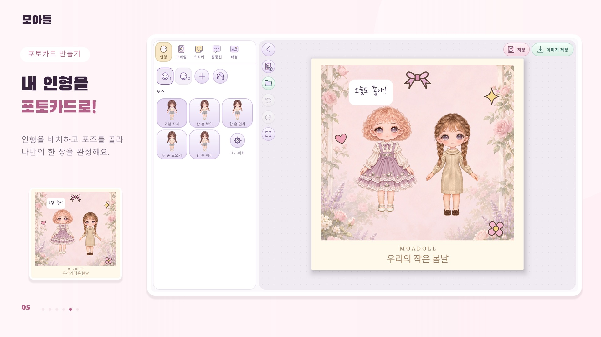
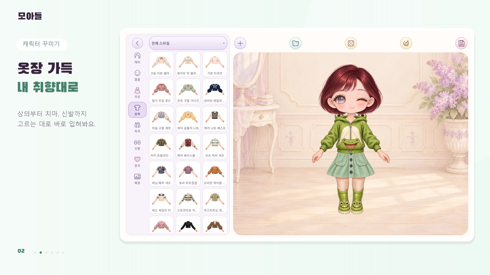
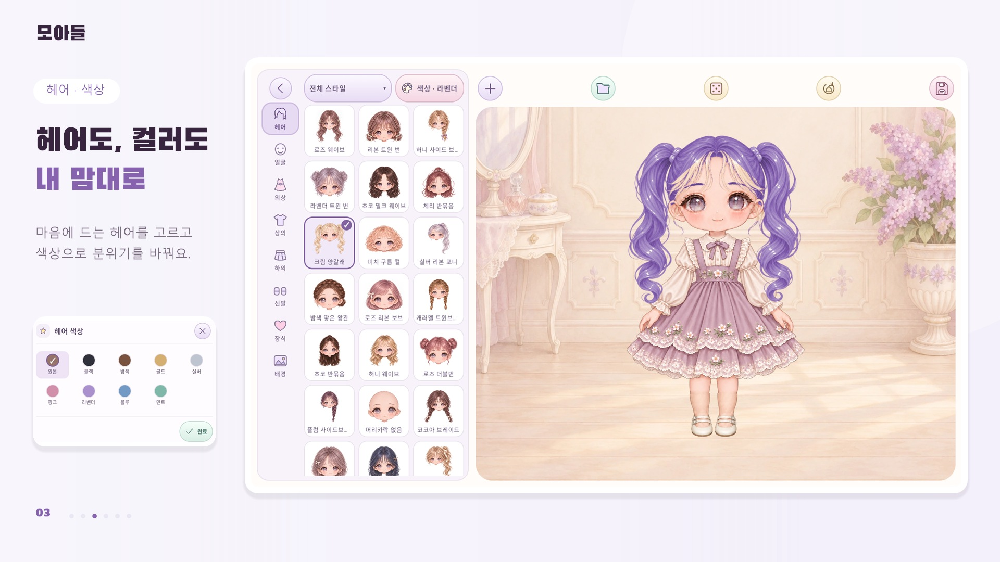
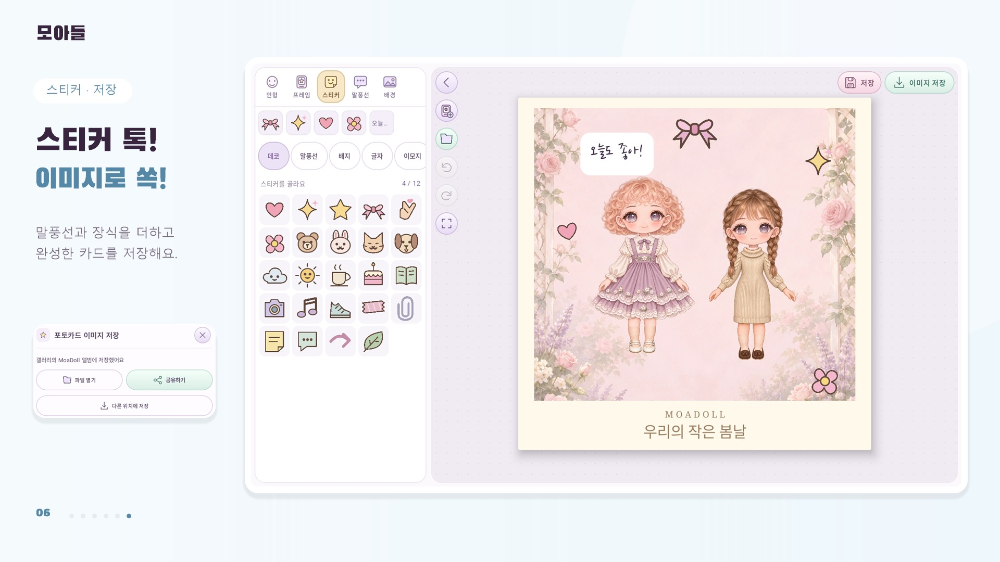

A LITTLE WORLD, ALL YOURS
작은 인형에,
나만의 취향을.
고르고, 꾸미고, 간직하는 즐거움.
당신의 취향이 모여 하나의 작은 세상이 돼요.
Google Play 출시 준비 중Android 8.0 이상


A LITTLE WORLD, ALL YOURS
고르고, 꾸미고, 간직하는 즐거움.
당신의 취향이 모여 하나의 작은 세상이 돼요.

PLAY WITH YOUR FAVORITES
오늘은 어떤 모습이 좋을까요?
옷장에서 시작해 작은 카드 한 장까지.

이미지 크게 보기상의와 하의부터 원피스, 신발, 작은 장식까지. 500종의 아이템으로 나만의 인형을 꾸며보세요.

이미지 크게 보기마음에 드는 헤어에 핑크, 라벤더, 민트 한 방울. 원본 색상과 여덟 가지 컬러로 분위기를 바꿔보세요.
인형을 최대 세 명까지 함께 놓고 다섯 가지 포즈를 골라요. 배경과 프레임을 더하면 나만의 작은 사진관이 완성돼요.

이미지 크게 보기스티커와 말풍선으로 이야기를 더해요. 완성한 카드는 PNG로 저장하고, Android 공유창으로 소중한 사람에게 보내보세요.
실제 앱 화면을 담은 소개 이미지입니다. 버전에 따라 화면과 구성이 달라질 수 있어요.
좋아하는 헤어, 표정, 옷을 고르세요. 랜덤 코디로 새로운 취향을 발견해도 좋아요.
인형을 나란히 세우고 프레임, 스티커, 말풍선을 더해 나만의 장면을 만들어요.
완성한 카드를 이미지로 간직하거나, 친구에게 보내는 카드로 마음을 전해요.
JUST YOU & YOUR LITTLE WORLD
회원가입 없이 시작해요. 인형과 카드의 편집 내용은 기기에 저장되고, 공유는 내가 원할 때 직접 선택해요.
Android 설정에 따라 시스템 백업·기기 이전이 적용될 수 있어요.개인정보 처리 방식 알아보기나만의 인형과 포토카드, 모아돌에서.
Google Play 출시 준비 중